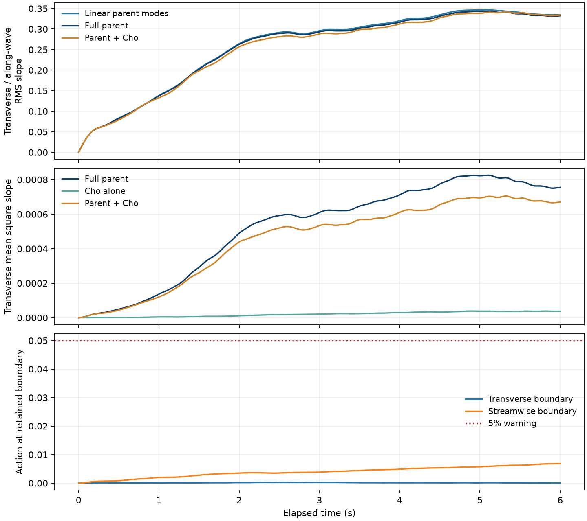
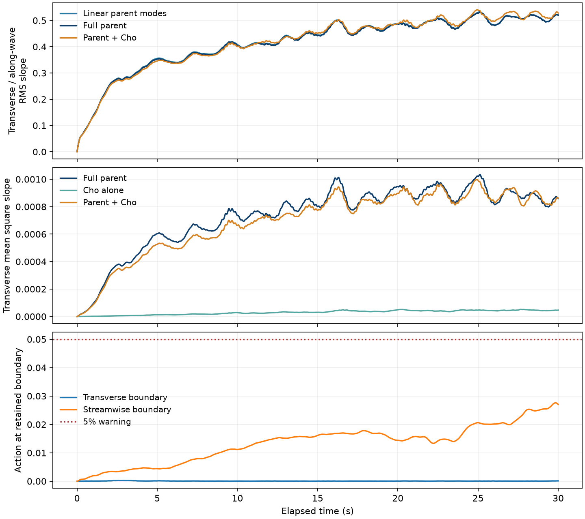

Steeper waves and longer evolution
Initially monochromatic 8 cm parent waves interact with an evolving three-dimensional Langmuir current. One case doubles the previous parent steepness from ka = 0.06 to 0.12 and evolves for 6 s. A second starts at ka = 0.10 and evolves for 30 s. Both retain 231 parent modes and reciprocal parent–current feedback. Cho gravity-capillary roughness follows both surfaces at 2.4× molecular viscosity.
The common domain is 32 × 64 cm with 12 cm depth. The current starts from the same wind-drift profile at physical age 16 s, with the same seeded Gaussian perturbation. The mean-current grid is 33 × 65 × 48; the Cho grid is 512 × 1024. Every retained wave mode participates in the bounded second-order gravity-capillary surface reconstruction. Cho remains passive: it does not feed back on the parent waves or current.
Cases and timing
Steepness means the initial carrier amplitude times its wavenumber, ka. Parent and current videos share 0.2× playback speed. The Cho close-up separately shows the final half second at 0.1× speed.
| Case | Initial ka | Physical duration | Parent/current video | Peak transverse action | Peak linear-parent RMS slope y/x | Peak boundary action y / x | Output |
|---|---|---|---|---|---|---|---|
| Twice the parent steepness: ka = 0.12 | 0.12 | 6 s | 30 s | 0.694 | 0.347 | 0.00029 / 0.0069 | Summary · Parent history · Mean-square slope |
| Longer evolution: ka = 0.10 | 0.1 | 30 s | 150 s | 0.972 | 0.532 | 0.00028 / 0.028 | Summary · Parent history · Mean-square slope |
Previous ka = 0.06 currents, shown more clearly
This is the completed six-second wide-mode current dataset from the previous comparison, rendered again with the corrected timing and current displays. It plays for about 30 seconds at 0.2× speed. No new wave or current integration was performed for this baseline.
Current display metadata · Current diagnostics · Baseline provenance · Original wave movies
Twice the parent steepness: ka = 0.12
Left: parent surface. Right: the same surface plus Cho roughness at 2.4× molecular viscosity. This close-up shows physical time 5.5–6 s at 0.1× speed: about 5 seconds of video. The complete Cho and mean-square-slope records cover 0–6 s.
Playback metadata · Parent, Cho and combined mean-square slope
Full parent evolution
All 6 physical seconds play at 0.2× speed, giving about 30 seconds of video. Lighting and vertical proportions are fixed.
Full parent + Cho evolution
The combined parent + Cho surface over all 6 physical seconds, played at 0.2× speed: about 30 seconds of video. Wave amplitudes are shown without magnification.
Underwater current structures
This movie covers the same 0–6 s interval at the same 0.2× speed as the parent movie: about 30 seconds of video. The panels show the wave-averaged Eulerian current, with fixed display scales. The roll cross-section stretches depth for legibility; its axes and vector key retain physical units. Each saved current snapshot is held until the next saved time; the instantaneous wave orbital motion is not included.
Current movie metadata and fixed threshold · Current strength and roll coherence

Longer evolution: ka = 0.10
Left: parent surface. Right: the same surface plus Cho roughness at 2.4× molecular viscosity. This close-up shows physical time 29.5–30 s at 0.1× speed: about 5 seconds of video. The complete Cho and mean-square-slope records cover 0–30 s.
Playback metadata · Parent, Cho and combined mean-square slope
Full parent evolution
All 30 physical seconds play at 0.2× speed, giving about 150 seconds of video. Lighting and vertical proportions are fixed.
Full parent + Cho evolution
The combined parent + Cho surface over all 30 physical seconds, played at 0.2× speed: about 150 seconds of video. Wave amplitudes are shown without magnification.
Underwater current structures
This movie covers the same 0–30 s interval at the same 0.2× speed as the parent movie: about 150 seconds of video. The panels show the wave-averaged Eulerian current, with fixed display scales. The roll cross-section stretches depth for legibility; its axes and vector key retain physical units. Each saved current snapshot is held until the next saved time; the instantaneous wave orbital motion is not included.
Current movie metadata and fixed threshold · Current strength and roll coherence

Interpretation
The two runs separate stronger initial curvature from a longer period of wave–current interaction. A larger parent steepness can strengthen curvature forcing, but does not guarantee a larger Cho mean-square slope: that is measured in the saved diagnostics. Large action at the retained-mode boundaries signals a potentially insufficient wave band. These coarse-current experiments study wave response and are not a turbulence-resolution or experimental-onset convergence study.